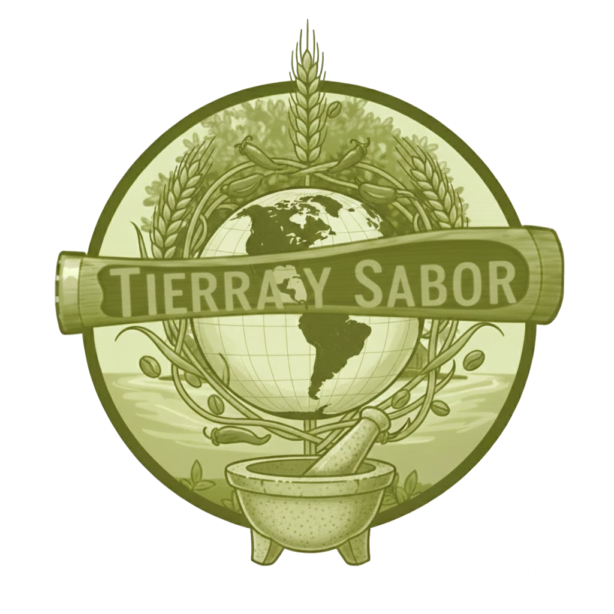

1. Restaurante Principal Interior: "Tierra y Sabor"
Este sigue siendo el buque insignia, un espacio elegante para cenas más formales y una experiencia culinaria completa.
Concepto:
Cocina de Fusión Latinoamericana de Autor, con un fuerte énfasis en ingredientes frescos de la región, mariscos del Pacífico y productos orgánicos de la propia isla o de granjas cercanas.
Ubicación:
Un brazo de la "V" del edificio principal, con amplios ventanales que ofrecen vistas panorámicas al mar y la piscina infinita.
Ambiente:
Sofisticado pero relajado, con un diseño interior que integra maderas oscuras, piedra local pulida, iluminación ambiental cálida y detalles artesanales.
Capacidad de Asientos en una sola sentada:
Aproximadamente 160 - 170 comensales.
Estimación Total por Noche:
190 - 230 comensales.